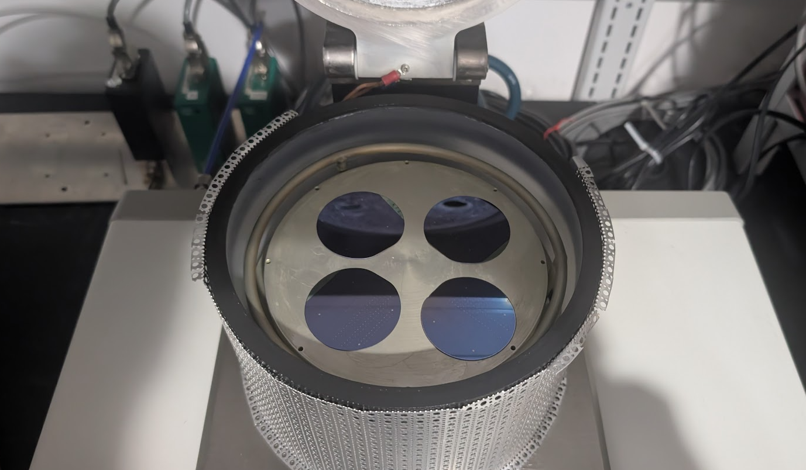
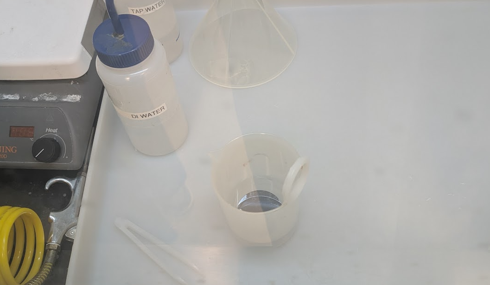

JUN 30, 2025
Summer Processing Lab: Week 4 (6/30)
This week marks the completion of the etching process for the first layer of our MOSCAPs. We calculated our etch times based on observed results from our peers, experimental data collected online, and the average thickness of our SiO2 layers across dry and wet oxide growth groups.
Wet Etch to remove SiO2 on areas devoid of features: Parameters: Wet samples SiO2 thickness: 64.59 nm average. Dry samples SiO2 thickness: 97.01 nm average. Wet etch agent: UN2817 Ammonium Hydrogen Difluoride, Solution, 8 (6.1). BOE Thermally grown SiO2 Etch Rate: ~800 Å/min @ 25 °C -> 80 nm/min. Time_w = (64.59 nm)/(80 nm/min) = 0.807375 min * 60 sec/min ~ 48 sec Time_d = (97.01 nm)/(80 nm/min) = 1.212625 min * 60 sec/min ~ 73 sec
Selective Si dry etch: Parameters: Plasma Mixture: 0.300 SCCM SF6/0.300 SCCM Ar Pressure: 20 mTorr w/ turbo Forward power: 250 Watts Reflected power: 4.6 Watts Etch rate SiO2: ~102 nm/min from peer results Time = (200 nm)/(102 nm/min) = 1.96078431 min * 60 sec/min ~ 118 sec.


After the dry etch, we used the stylus profilometer to measure the Si etch depth. We observed significantly lower Si etch depth than expected, ~75nm rather than the planned 200nm, which indicates that we etched too many wafers at a time, reducing power density. We did not account for the power density reduction due to multiple wafers. This will be a consideration going forward.